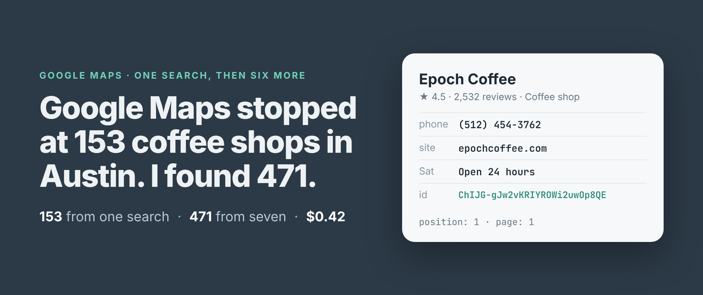
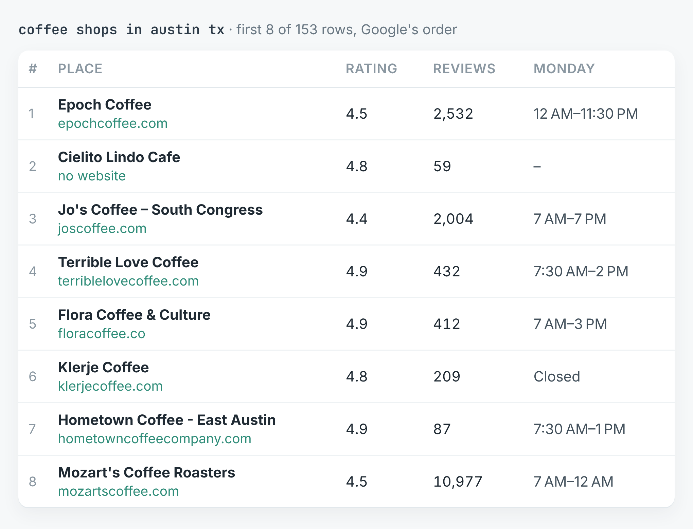
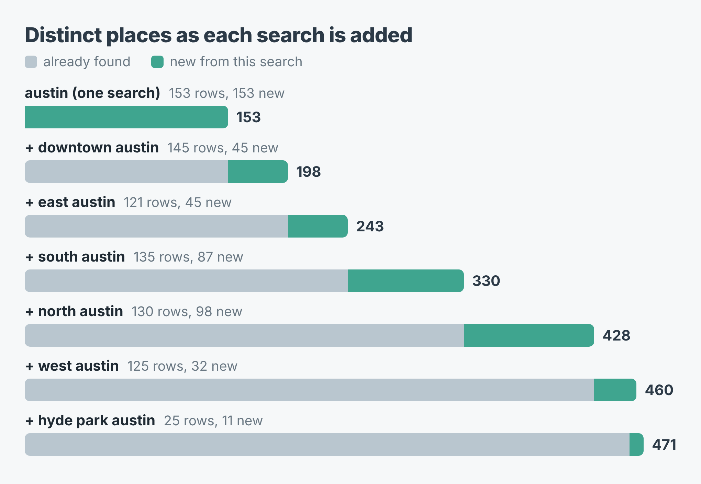
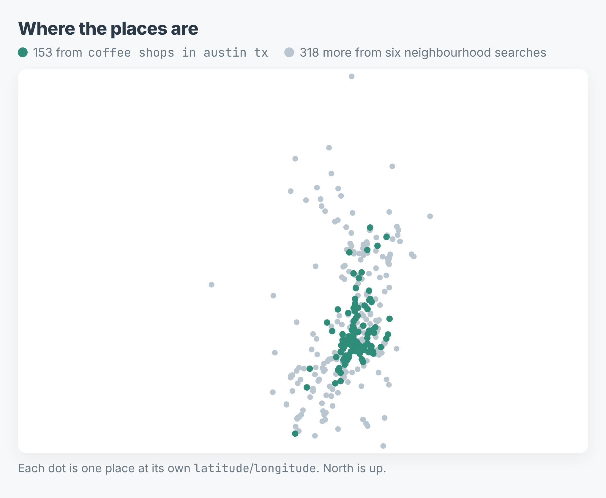

How to get past the Google Maps results limit (153 coffee shops in Austin became 471)
I wrote this with an AI assistant. The runs, numbers and code are real, and I checked them.

471. That's how many distinct coffee shops I got out of Google Maps for Austin today. The search "coffee shops in austin tx" on its own gave me 153, and then Google had nothing more to show.
That ceiling is not a bug in anyone's scraper. Maps itself stops scrolling at about the same point. Google hands out a search's results 20 at a time and runs out somewhere past a hundred. Austin plainly has more than 153 places that sell coffee. The question is how to ask for the rest.
The answer is to ask smaller questions. Below are the two runs I made to show it: one search for the whole city, then six searches for parts of it, with the numbers from both.
One search, 153 places
I build and run a Google Maps scraper on Apify, and the city-wide search is the input it shows by default. With the depth set to its maximum, it read nine pages from Google in 19 seconds and stopped at 153 places. The ninth page carried only one place it hadn't already returned.

The first eight of 153 rows, in Google's order. The second-ranked place has no website, phone or opening hours on its listing.The rows are good. 152 of 153 have a rating and a review count, 150 have opening hours, 145 a website and 124 a phone number. Every one has coordinates and Google's Place ID. There just aren't enough of them.
Six smaller searches
The second run asked the same question six times: coffee shops in downtown, east, south, north and west Austin, and in Hyde Park. Each search comes back with its own ranked list, and each list goes as deep as Google lets it.
import { ApifyClient } from 'apify-client';
const client = new ApifyClient({ token: process.env.APIFY_TOKEN });
const areas = ['downtown', 'east', 'south', 'north', 'west'];
const run = await client.actor('simple.actor/google-maps').call({
queries: areas.map((a) => `coffee shops in ${a} austin tx`),
maxPlaces: 200,
});
const { items } = await client
.dataset(run.defaultDatasetId).listItems();
const places = new Map();
for (const p of items) if (p.placeId) places.set(p.placeId, p);
The run also had Hyde Park as a sixth search. maxPlaces: 200 is the most it accepts and more than Google lists for any one search, so it means "all of them". The full script, which also writes a CSV, and a Python version are in the repo.
The six searches took 40 seconds and returned 681 rows: 145 downtown, 135 south, 130 north, 125 west, 121 east, and 25 for Hyde Park, where Google ran out after two pages. Those 681 rows are 462 distinct places. Put together with the city-wide search, that's 471.

Each bar adds one search to the ones above it. Grey is what was already found, teal is new.North Austin added the most, 98 places the earlier searches hadn't returned. South added 87. Downtown, for all its 145 rows, added only 45, because the city-wide search had already found most of downtown.
Where the extra places are
The city-wide list isn't a sample of Austin. It's Austin's middle.

Every place from both runs, drawn at its own coordinates.The 153 from the city-wide search sit in a tight band through downtown and up the middle. The 318 that only the neighbourhood searches found spread out to the edges, north past the city line and south and west of it. If you're counting competitors, planning a sales route or checking where a chain could open, the edges are the part you need.
What it cost
The price is $0.0005 for each place returned, with Apify's platform costs included. The city-wide search was 153 × $0.0005 = $0.08. The six searches were 681 × $0.0005 = $0.34. Both together came to $0.42 for 471 distinct places.
What splitting gets wrong
You pay for the overlap. The neighbourhood lists overlap a lot: 140 places came back from more than one search, and 219 of the 681 rows were repeats. The scraper never returns a place twice within one search, but it can't know that two searches meant the same café, so each row is charged. That was $0.11 of the $0.34. Deduplicate on placeId as the code above does, and plan the split so the areas overlap less.
It still misses some. Nine places from the city-wide search turned up in none of the six neighbourhood searches. Keep the broad search in the list rather than replacing it.
"North Austin" isn't a city limit. Eleven of the 471 places have an address outside Austin itself: Cedar Park, Round Rock, Georgetown, Pflugerville, Lakeway, Sunset Valley and Manchaca. Google reads the place in the search as a direction, not a boundary. Filter on address or on the coordinates if the line matters to you.
Not everything is a coffee shop. Nine places carry no coffee or café category at all: three bakeries, three restaurants, two bookshops (one of them also a wine bar) and a shopping district. Google returns what it thinks matches, and categories is how to tell.
Some rows are thin. 51 of the 471 have no website on their listing. Five have neither a rating nor a review count, which is what a listing with no reviews looks like. No place came back with a rating but without its count.
The code is in simple-actor/google-maps-scraper, in Node and Python, and both write a CSV with one row per place. The scraper is Google Maps Scraper on Apify. Swap in your own trade and your own city's neighbourhoods: "plumbers in east denver co" splits the same way.